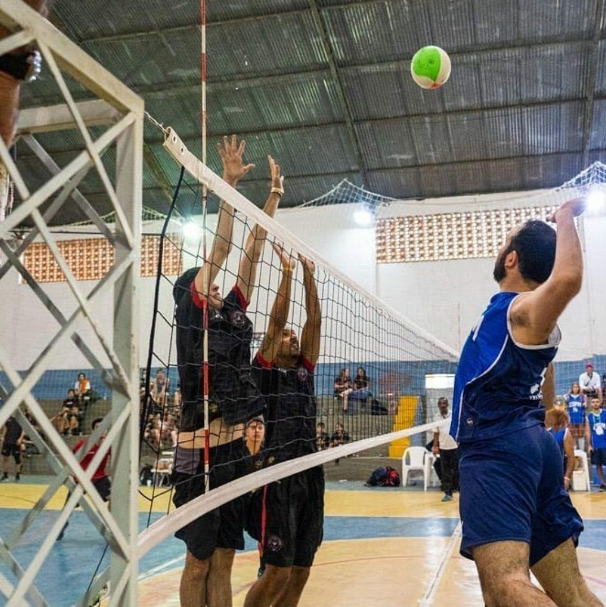
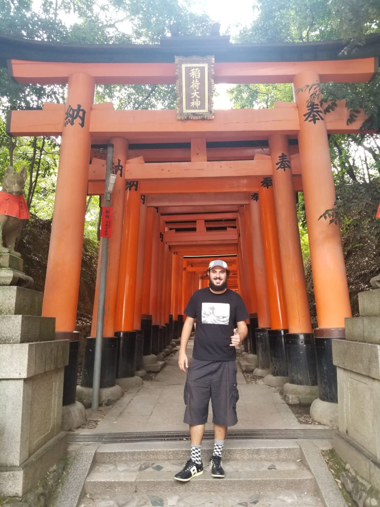

Patrick Al Khouri
Programmer

Brazilian/Carioca who wants to shift his career and enter the tecnology market after working in Sales for 3+ years. Music geek, sports addict and when possible, world traveler!
LinkProgrammer
Brazilian/Carioca who wants to shift his career and enter the tecnology market after working in Sales for 3+ years. Music geek, sports addict and when possible, world traveler!
Link
Spot Educação - Worked as a B2B Sales coordinator from July 2018 until Februray 2019 where I would do outbound and inbound sales of english classes to companies. Increased the number of students from 40 to over 100 and closed the 2nd biggest contract ever of the company.

Ambev - 2 years and 7 months where i started as a sales talent and my last job was as price manager of the northeast region, most of my roles were in sales where i got to exercise diret and indirect leadership, developed strong solution driven mentality and sense of ownership.
Music - Former rocker now more into Hip Hop and modern music as whole, trying to start my Vinyl collection (18 and counting). Frustrated guitar player

Sports - Semi pro volleyball player for Fluminense (S2), Football, NBA and NFL follower, go Eagles, go Suns! Fantasy Football addict, PADI Diver.
Travelling - 2 big backpacks, the first in 2012 where I traveled three months through Bolivia, Peru and Equador, and the other in 2017-2018 where I travelled 7 motnhs and visited 9 coutries in Oceania/Asia. Next one? Probalby Middle East
